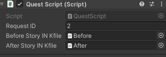

Hanae Royal Flower Picker
Intro Gameplay
Overview
A top down 2d pixel art game where you play as Hanae, a royal flower picker, sent to a village in need of flowers. Help the villagers with their requests, rejuvenate the land, and save the village from its fate. The gameplay is simple, roam around, plant seeds, and pick up flowers. Each villager has their own story that unfolds throughout the days.Goal
My main priority in this game is narrative design, story writing, and character design. This is my first game to have a lite quest system, each villager having a unique personality and a new quest each day. Through playing the levels, it showcases character arcs for each character and progression of the story.Development
Hanae Flower Picker was a project born out of my love for narrative-driven games and my desire to create a simple yet engaging gameplay loop. Inspired by npckc’s A Hero and a Garden, I wanted to design a game that combined a relaxing top-down experience with meaningful story progression. However, the development process was far from straightforward. Each system—from controls to quests to narrative design—presented its own set of challenges, requiring creative problem-solving and iterative testing to get right.Developing Core Gameplay Loop
The gameplay loop revolves around three main actions: picking flowers, talking to villagers, and checking into your cabin to progress to the next day. Having worked on several 2D games before, I was able to quickly implement the top-down movement and interaction system. The player controls Hanae, the royal flower picker, as she roams the village, plants seeds, and collects flowers to fulfill villagers’ requests.The flower-picking mechanic is based on a simple collision system. Each flower has a trigger box, and when the player collides with it, the flower is added to the inventory. To track the player’s progress, I created an inventory system that stores the number of flowers collected.
While I initially considered a more complex and dynamic inventory system, I opted for a simpler approach due to time constraints: each type of flower (six in total) is represented by an integer variable in the game manager. When the player picks up a flower, the corresponding variable increments, and the inventory UI updates accordingly.
To make the system more efficient, I implemented a dynamic event system. Each time a flower is picked, it emits a signal that the game manager receives. This approach minimized dependencies and ensured that the game state was updated in real-time without unnecessary overhead. This event system can be expanded upon, allowing me to create as many signals as I want for a more modular game design approach.
Quest Progression and Day System
The quest system was one of the most ambitious aspects of the game. I wanted each villager to have unique quests that unfolded over the course of five days, with the environment changing to reflect the story. However, implementing this system presented several challenges.The quest system was one of the most ambitious aspects of the game. I wanted each villager to have unique quests that unfolded over the course of five days, with the environment changing to reflect the story. However, implementing this system presented several challenges. I initially struggled with how to track quest progress across multiple days. My first attempt involved using a series of boolean variables to track which quests were active or completed, but this quickly became unwieldy as the number of quests grew.
To help solve this, I modified the Game Manager to also handle all quest-related data. Each quest was represented by a game object with a Quest Script, which contained a boolean to indicate whether the quest was triggered or completed, as well as an integer for the required number of flowers. This modular approach made it easier to manage quests and update the game state. Each Quest Object has a quest ID and two dialogue INK files, allowing for each creation of multiple quest objects in a level.

The next step I wanted to make was implementing a day system similar to the Persona games. I wanted each day to feel distinct, with new quests from characters and environmental changes. My initial approach was to load everything into a single scene and toggle objects on and off, but this quickly became messy and inefficient.
Instead, I decided to make each day a separate Unity scene. This allowed me to design each level with its own unique layout and quests while keeping the code clean and manageable. In each scene, the Game Manager has a set number of quests each day that the player needs to fulfill. To reflect the story’s progression, I gradually unlocked new areas of the map and made the environment more vibrant as Hanae revitalized the land.

Managing Narrative Design and Game State
I wanted the story to unfold through visual novel-style cutscenes, but I needed a way to seamlessly transition between gameplay and dialogue. My initial implementation used a series of string arrays to store dialogue, but this approach was difficult to manage and lacked flexibility.To address this, I switched to Inkle’s Ink, a plugin that allowed me to script dialogue in a structured and manageable way. Each dialogue file contained tags for character names, sprites, and emotions, which were processed by the Dialogue Manager. This system made it easy to display the correct character sprites, names, and dialogue lines during cutscenes.
Designing the Characters
While the programming and design were my primary focus, the narrative and characters played a crucial role in shaping the game. Each villager has a unique personality and story arc, which unfolds over the course of the game. Hanae’s interactions with these characters not only drive the plot but also reveal her own personality and growth.- Hanae is the main character. She is a royal flower picker who takes her job seriously. She is kind and caring, worrying about others too much. She is knowledgeable about different types of flowers and their uses, allowing her to help the other characters.
- Anko is a starry eyed girl who admires Hanae, allowing Hanae to act as a mentor figure to her. Anko learns about flowers, and by extension the player as well.
- Isaac is more timid and shy, letting Hanae show more compassion and empathy, as well as flower knowledge to aid in his endeavors. He has a crush on Kat, in which Hanae lends a helping hand.
- Kat is sociable and amiable, being one of the older characters in the game. Her family runs a diner, highlighting the other uses cases of flowers in the world.
- John is a stubborn man who comes off as mean at first. This creates friction between Hanae and him but overtime he slowly reveals more about his history and eventually becomes on good terms with Hanae.
- Jeffery is the first character Hanae interacts with and he acts as an information directory, aiding the player through the game about locations of characters and the overall map layout. He also gives a general backstory on the village and the residents.

To make their stories resonate, I tied their quests to the flower-picking mechanic. Each character’s quest required specific types of flowers, which encouraged the player to explore the environment and engage with the gameplay loop.
Playtest and Iteration
In order to ensure the game felt cohesive and each system worked properly, I playtested numerous times. To make sure each day is able to be completed, I would have to play each day, and fulfill each quest, checking if the variables updated properly and if the Game Manager is able to recognize finished quest states.This method also doubles as a test to check if the dialogue system and quests are functioning properly as it allowed me to see if quests were being tracked properly. And playing through the dialogue would allow me to verify if it felt grammatically cohesive and check for typos.
Playing through the game several times from start to finish gave enough insights if all features were working properly and how the experience felt as a whole.